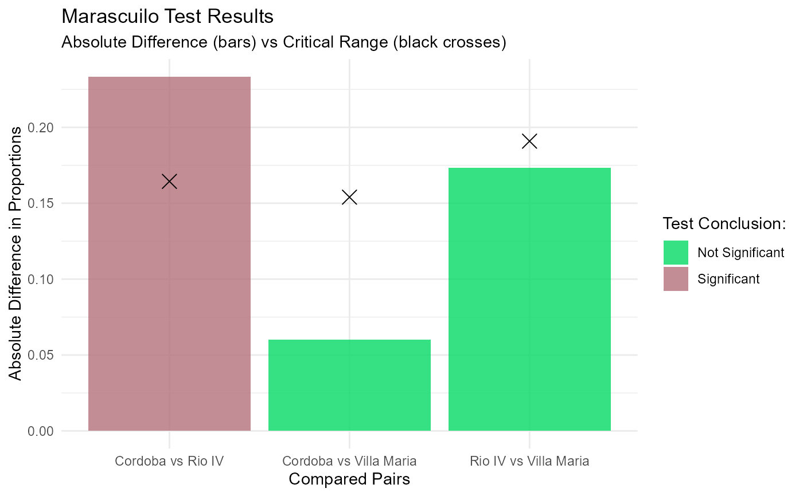

Marascuilo Procedure for Multiple Comparisons of Proportions
marascuilo_test.RdComputes and evaluates all possible pairwise comparisons among proportions across multiple independent groups from a raw dataset. Following a statistically significant global test of homogeneity, this procedure identifies which specific pairs of proportions differ significantly while controlling the overall family-wise error rate.
Arguments
- df
A
data.framecontaining the raw categorical data.- col_grupo
Character string specifying the column name that defines the categories/groups.
- col_respuesta
Character string specifying the column name with the responses (e.g., agree/disagree).
- valor_exito
Character string indicating the specific value in
col_respuestaconsidered as statistical success.- alpha
Numeric value indicating the significance level (default is
0.05).
Value
An object of S3 class marascuilo (inheriting from data.frame)
containing the pairwise comparisons with four columns: Pair,
Absolute_Diff, Critical_Range, and Significance.
Note
For any pair of groups \(i\) and \(j\), the mathematical procedure compares the observed absolute difference between sample proportions, \(|\hat{p}_i - \hat{p}_j|\), against a critical range \(r_{ij}\) defined as: $$r_{ij} = \sqrt{\chi^2_{1-\alpha, df}} \cdot \sqrt{\frac{\hat{p}_i(1-\hat{p}_i)}{n_i} + \frac{\hat{p}_j(1-\hat{p}_j)}{n_j}}$$ where \(\chi^2_{1-\alpha, df}\) is the critical value from the chi-square distribution and \(n_i, n_j\) are the respective sample sizes for each group. A pairwise comparison is declared statistically significant if \(|\hat{p}_i - \hat{p}_j| > r_{ij}\).
References
Marascuilo, L. A. (1966). Large-sample multiple comparisons. Psychological Bulletin, 65(5), 280-290.
NIST/SEMATECH (2012). e-Handbook of Statistical Methods, Section 7.4.7.4 (Marascuilo procedure). National Institute of Standards and Technology.
Examples
library(ggplot2)
df_ejemplo <- data.frame(
City = c(rep("Cordoba", 150), rep("Villa Maria", 75), rep("Rio IV", 75)),
Opinion = c(
rep("Agree", 115), rep("Disagree", 35),
rep("Agree", 53), rep("Disagree", 22),
rep("Agree", 40), rep("Disagree", 35)
)
)
resultados <- marascuilo_test(df_ejemplo, "City", "Opinion", "Agree")
print(resultados)
#>
#> --- Marascuilo Procedure Results ---
#>
#> Pair Absolute_Diff Critical_Range Significance
#> Cordoba...1 Cordoba vs Rio IV 0.2333 0.1644 Significant
#> Cordoba...2 Cordoba vs Villa Maria 0.0600 0.1540 Not Significant
#> Rio IV Rio IV vs Villa Maria 0.1733 0.1909 Not Significant
#>
#> ------------------------------------
ggplot2::autoplot(resultados)
